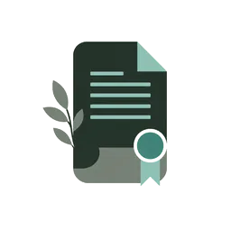

strength 1 of 7
you type each client once.
The same client often lives in four tools. Xylum keeps one record.
the proof
Contacts is the only address book in Xylum. A supplier is a contact too, not a second list.

the quoteone contact the projectone contact
the projectone contact- the contractone contact
 the invoiceone contact
the invoiceone contact the supplierone contact
the supplierone contact